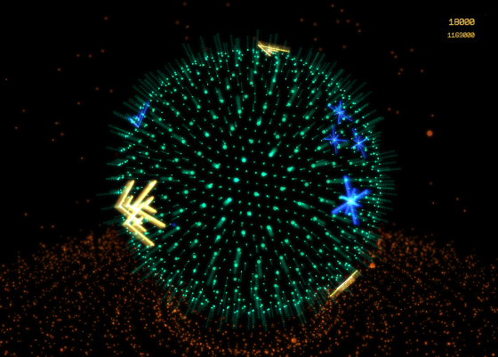

A selection of indie games I have done on my free time. In these I have tried to play with elements that have inspired me from a personal point of view at the time. Sound design in all by Tommi Lahtinen.
NX 647 (iPad, 2014, not yet released)

Cosmic Mechanic (iPad, 2013)
Puzzle Bonsai (iOS & Flash, 2012)
Pvt. Littledude vs Robot Armada (Flash, 2011)
Fitting Pieces (Flash, 2009)
Smilers (Windows, 1999) (Art: Pekka Palmu)

I have been employed by
Housemarque since 2001 as a programmer.
During my time there I have been involved in pretty much everything, from engine and tool work to gameplay and special FX. Here's a sampling of titles I have worked on.
Resogun (PS4, 2013)
Outland (Xbox 360 & PS3, 2011)
Dead Nation (PS3, 2010)
Super Stardust Portable (PSP, 2008)
Golf: Tee it Up (Xbox 360, 2008)
Trader (PS2, prototype, ~2004)
Furry Dragons (Xbox, prototype, ~2002)